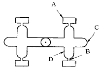
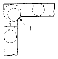
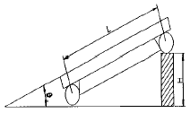
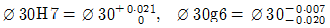
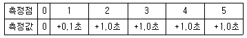

사출(프레스)금형산업기사 (2004-03-07 기출문제)
1과목: 금형설계
1. 사출금형에서 파팅라인, 이젝터핀, 슬라이드 코어의 주위 등의 틈새에 용융수지가 흘러들어가서 제품과는 관계없는 필름 모양의 막이 생기는 결함은 무엇인가?
- 플래시
- 웰드 라인
- 플로 마크
- 싱크 마크
(정답률: 73%)

2. 동전, 메달 등의 냉간 단조 작업에 가장 적합한 프레스의 형태는?
- 크랭크 프레스
- 크랭크레스 프레스
- 너클 프레스
- 캠 프레스
(정답률: 78%)
3. 스트리퍼 플레이트(stripper plate) 기능으로 옳지 않은 것은?
- 펀치를 다이에 안내하는 역할을 한다.
- 재료를 펀치로부터 빼 주는 역할을 한다.
- 소재를 누르는 역할을 한다
- 금형의 정도를 높여 준다.
(정답률: 56%)
4. 다음의 사출성형용 금형 중에서 보통 금형에 속하는 것은 어느 것인가?
- 2매 구성금형
- 분할금형
- 나사금형
- 슬라이드코어 금형
(정답률: 94%)
5. 피어싱 금형에 사용되는 표준 부품이 아닌 것은?
- 피어싱 펀치
- 스트리퍼 볼트
- 게이트
- 다이 부시
(정답률: 79%)
6. 앵귤러핀과 슬라이드 코어 구멍과의 틈새는 어느 정도가 적당한가?
- 0.1∼0.2 mm
- 0.2∼0.3 mm
- 0.3∼0.4 mm
- 0.5∼1.0 mm
(정답률: 34%)
7. 펀치의 바깥쪽의 누름면에 삼각형의 돌기(bead)를 설치하여 블랭킹하는 가공을 무엇이라 하는가?
- 정밀블랭킹가공
- 마무리블랭킹가공
- 셰이빙가공
- 일평면 커팅가공
(정답률: 79%)
8. 다음 그림에서 콜드 슬러그 웰(cold slug well)은 어느 것인가?

- A
- B
- C
- D
(정답률: 88%)
9. 사출금형 설계 전에 고려할 사항과 가장 먼 항목은?
- 성형 사이클이 좋은 금형 구조로 할 것
- 2차 가공이 적도록 할 것
- 제작기간이 길더라도 제작비가 싼 구조로 할 것
- 내구성이 있는 구조로 할 것
(정답률: 96%)
10. 드로잉 공정의 불량 현상으로 공기빼기 구멍이 잘 맞지 않을 때 발생하는 것은?
- 스트레처 스트레인(stretcher strain)
- 오일 캐닝(oil canning)
- 쇼크 마크(shock mark)
- 배큠(vacuum)
(정답률: 57%)
11. 강판의 엠보싱이나 비딩작업을 위한 재료 선택시 고려하지 않아도 되는 것은?
- 에릭슨치
- 드로잉률
- 가공경화지수
- 균일연신율
(정답률: 34%)
12. 러너리스 시스템에 속하지 않는 것은?
- 익스텐션 노즐
- 웰타입 노즐
- 핫러너 방식
- 핀포인트형 노즐
(정답률: 73%)
13. 성형품 치수가 52mm 이고, 성형수축률이 5/1000 일때 상온의 금형치수를 얼마로 가공하여야 하는가?
- 5.5mm
- 5.01mm
- 52.5mm
- 52.26mm
(정답률: 78%)
14. 프레스가공에서 연속작업을 하기 위해 각 단계에서 성형품을 트랜스퍼피더에 의해 이송시키면서 자동 프레스작업을 할 수 있도록 한것은?
- 포밍다이
- 복합다이
- 트랜스퍼다이
- 프로그레시브다이
(정답률: 88%)
15. 사출 성형품 설계에서 면과 면이 만나는 구석에 내부응력이 집중되어 균열 또는 변형을 일으키는 원인이 되어 라운딩 처리를 하는데, 일반적으로 그림과 같은 경우의 내부 R은 두께T의 몇배 인가?

- 1/3배
- 1/2배
- 1배
- 1.5배
(정답률: 60%)
16. 가로 200mm, 세로 300mm, 높이 10mm 인 성형품의 중앙에 직경 100mm 인 관통 구멍이 있을 때, 이 성형품을 성형하려면 성형기의 형체력은 다음 중 어느 것이 적절한가? (단, 캐비티수 1개, 캐비티 내압 600kgf/cm2 이다.)
- 250ton
- 285ton
- 315ton
- 200ton
(정답률: 29%)
17. 다음 중 가이드 부시가 붙어 있는 다이세트의 형식이 아닌 것은?
- AB형
- BB형
- CB형
- DB형
(정답률: 76%)
18. 판두께 0.5mm인 규소강판에 가로세로 각각 20mm의 사각구멍을 블랭킹 하는 경우의 최대 전단하중은? (단, 규소강판의 전단저항은 45㎏f/mm2)
- 900㎏f
- 1800㎏f
- 3600㎏f
- 9000㎏f
(정답률: 65%)
19. 두께 2㎜인 연강판에 지름 10㎜의 구멍을 피어싱할 때 다이 구멍의 치수는 몇 ㎜로 하는가? (단, 클리어런스는 5%로 한다.)
- 9.8
- 9.9
- 10.1
- 10.2
(정답률: 28%)
20. 다음 중 에어 이젝팅 방법에 대한 설명이 아닌 것은?
- 이젝터 판 조립기구가 필요없다.
- 가동측이나 고정측 어느곳에도 사용할 수 있다.
- 밀착력이 강한 성형품을 밀어내기에 적합하다.
- 금형 냉각의 효과를 겸하고 있다.
(정답률: 59%)
2과목: 기계가공법 및 안전관리
21. 서보(servo)기구를 위치 검출 방식에 따라 분류할 때 해당되지 않는 것은?
- 개방 회로 방식
- 반개방 회로 방식
- 반폐쇄 회로 방식
- 폐쇄 회로 방식
(정답률: 72%)
22. 아주 얇은 판이나 복잡한 형상의 가공에 활용되는 화학적용출에 의한 가공방법으로서 인쇄회로기판, 장식패널, IC프레임의 제조에 사용되는 기술은?
- 화학블랭킹
- 포토에칭
- 초음파가공
- 레이저가공
(정답률: 84%)
23. 수직 밀링머신에 주로 사용되는 절삭공구는 다음중 어느 것인가?
- 엔드밀(emdmill)
- 사이드 컷터(side cutter)
- 평 컷터(plain cutter)
- 메탈 쏘(metal saw)
(정답률: 87%)
24. 사인바의 측정은 45° 이하의 각도 측정에 적합하고 특히 사출금형에서 앵귤러핀 가공시에도 삼각함수가 적용되는 방법으로서 다음 도면을 보고 각도 θ 를 구하면? (단, 사인바의길이 100mm, 블록게이지 높이 50mm 일때)

- 15°
- 20°
- 25°
- 30°
(정답률: 54%)
25. 가공재에 소성역에 달할 수 있는 힘을 가하여 목적하는 형상으로 가공하는 방법은?
- 블랭킹
- 노칭
- 굽힘
- 슬리팅
(정답률: 72%)
26. 금형가공 중 탭작업을 하기전 가공할 구멍의 직경(mm)을 구하는 식이 맞는 것은? (단, d:탭구멍직경(mm), D:나사외경(mm), P:나사피치(mm), N:1인치당 나사산수이다.)
- d=D-P
- d=D-P/N
- d=DxPxN
- d=D-PN
(정답률: 32%)
27. 제품제작 수량이 적을 경우 금형이 차지하는 비용을 적게하기 위한 형은?
- 플라스틱형
- 간이형
- 다이 캐스팅형
- 트리밍형
(정답률: 78%)
28. 초경합금과 같은 경질재료, 숫돌마모가 큰 특수강, 열에 민감한 재료를 가공하는데 적합한 가공방법은?
- 전해연마
- 전해연삭
- 호우닝
- 슈퍼피니싱
(정답률: 50%)
29. 절삭가공에서 구성인선의 방지법에 대한 사항 중 알맞지 않은 것은?
- 절삭깊이를 크게 한다.
- 절삭속도를 크게 한다.
- 공구 경사각을 크게 한다.
- 공구 인선을 예리하게 한다.
(정답률: 80%)
30. 소성 가공이 아닌 것은?
- 호닝 가공
- 압출 가공
- 인발 가공
- 전조 가공
(정답률: 61%)
31. 다음 중 미소 각도를 측정하는 광학적 측정기는?
- 미니미터
- 공기 마이크로미터
- 블록 게이지
- 오토 콜리메이터
(정답률: 47%)
32. 강의 표면에 탄소를 침투시켜 강의 표면을 단단하게 하는 방법은?
- 청화법
- 질화법
- 항온 열처리법
- 침탄법
(정답률: 96%)
33. 밀링가공에서 직접 분할법의 설명 중 틀린 것은?
- 비교적 단순한 분할을 할 때에 사용한다.
- 신시내티형과 브라운 샤프형이 있다.
- 분할판의 구멍 수는 24구멍이기 때문에 응용범위가 좁다.
- 일반적으로 면판 분할법이라고 한다.
(정답률: 39%)
34. 기계도면에서 ø50H7과 ø50F7의 공차는 어떻게 다른가?
- 알 수 없다
- 동일하다
- ø50F7이 더 크다
- ø50H7이 더 크다
(정답률: 30%)
35. 가장 간단한 수동식 클램프로서 구조용 압연 강재등으로 제작된 클램프는 어느 것인가?
- 스트랩 클램프
- 나사 클램프
- 훅 클램프
- 캠 클램프
(정답률: 36%)
36. 전단강도가 50 kgf/mm2이고 두께가 2mm인 강판에 직경 10mm의 구멍을 전단가공할 때 필요한 전단력은 몇 kgf 인가? (단, 보정계수는 1이다.)
- 785
- 1570
- 3140
- 6280
(정답률: 44%)
37. 냉간단조의 특징으로 올바른 것은?
- 제품의 정밀도가 우수하다.
- 제품의 크기에 제한을 받지 않는다.
- 재료의 이용률이 적다.
- 재료의 탄성변형을 이용한다.
(정답률: 65%)
38. 사출금형과 사출기의 위치를 정하는 역할을 하는 부품은?
- 가이드핀
- 리턴핀
- 로케이트링
- 스푸루부쉬
(정답률: 84%)
39. 와이어 컷 방전가공기에서 작업이 곤란한 것은?
- 테이퍼가 있는 다이가공
- 피어싱 구멍
- 2차원 저부형가공
- 스퍼기어 펀치가공
(정답률: 42%)
40. 원통형이나 6∼8각형의 상자속에 공작물과 연마제등을 넣고 회전시켜 요철부분을 제거하여 매끈한 가공면을 얻는 가공법은?
- 롤러 다듬질
- 버니싱(burnishing)
- 호닝(honing)
- 배럴가공(barrel finishing)
(정답률: 74%)
3과목: 금형재료 및 정밀계측
41. 마이크로미터의 스핀들 나사 피치가 0.5 mm 일 때 딤블을 100등분하고 딤블의 4눈금을 5등분한 아들자가 붙어 있다이 마이크로미터로 읽을 수 있는 최소 눈금은 얼마인가?
- 1/100mm
- 1/200mm
- 1/500mm
- 1/1000mm
(정답률: 35%)
42. 탄소함유량이 0.6% 이상의 고탄소강으로 담금질 경도가 높고 내마모성이 양호하며 공구강 중 값이 싸며 가이드핀, 가이드부시, 이젝터핀, 리턴핀 등에 주로 사용되는 재료는?
- 고속도공구강
- 기계구조용강
- 탄소공구강
- 스테인리스강
(정답률: 73%)
43. 다음 중 아베 원리에 적합한 측정기는?
- 버니어캘리퍼스
- 측장기(표준자 이동형)
- 표면거칠기 측정기
- 하이트 게이지
(정답률: 60%)
44. 도면에 ø30H7/g6로 조립한 상태의 치수 허용한계가 기입되어 있을 때 축의 최대 허용치수는 몇 mm 인가? (단,

임.)- ø29.980
- ø29.993
- ø30.000
- ø30.021
(정답률: 38%)
45. 강의 경도 저하 및 연화, 조직을 균질화 시키고 내부응력을 제거하기 위하여 실시하는 열처리 조작은?
- 불림
- 풀림
- 담금질
- 오스포밍
(정답률: 72%)
46. 진원도 판정의 기준으로 사용할 수 없는 것은?
- 최소외접 중심법
- 최대내접 중심법
- 최소영역 중심법
- 최대영역 중심법
(정답률: 46%)
47. 다음 철강의 조직학상 분류중 과공석강의 탄소 함유량은 몇 %인가?
- 0.025∼0.8
- 0.8∼2.0
- 2.0 ∼4.3
- 4.3∼6.67
(정답률: 65%)
48. 전기적 변환기의 장점에 해당하는 설명으로 가장 옳은 것은?
- 변환기를 소형화 할 수 있다.
- 증폭 및 감폭이 용이하지 않다.
- 질량, 관성효과를 최대로 한다.
- 마찰의 영향은 최대로 한다.
(정답률: 49%)
49. 다음중 테일러의 원리에 맞게 제작하지 않아도 되는 게이지는?
- 평형 플러그 게이지
- 나사 피치 게이지
- 원통형 플러그 게이지
- 링 게이지
(정답률: 49%)
50. 단조 작업을 할 수 없는 조직은?
- 페라이트
- 펄라이트
- 시멘타이트
- 오스테나이트
(정답률: 47%)
51. V 앤빌 마이크로미터의 사용용도로 가장 옳은 것은?
- 드릴의 웨브 측정
- 나사의 측정
- 내측 홈의 측정
- 홀수 홈을 가진 탭의 외경측정
(정답률: 34%)
52. 다음 주철 중 제조 과정에서 열처리가 필수적인 것은?
- 미하나이트(Meehanite)주철
- 가단주철
- 구상흑연주철
- 보통주철
(정답률: 32%)
53. 다음중 항공기 재료에 많이 사용되는 두랄루민의 강화기구는 어느것인가?
- 용질경화
- 시효경화
- 가공경화
- 마르텐자이트 변태
(정답률: 66%)
54. 오토콜리메이터(반사경 밑변길이 100mm)를 이용하여 진직도를 구하기 위한 측정데이터가 다음과 같을때 양단 기준법에 의한 진직도값은?

- 0㎛
- 2.0㎛
- 4.0㎛
- 6.0㎛
(정답률: 15%)
55. 쾌삭황동은 α -황동에 다음 중 어떤 원소를 넣은 것인가?
- Pb
- Al
- Si
- Sb
(정답률: 72%)
56. 다음 금형재료 중에서 냉간 단조 금형의 재료로 많이 사용되면 공냉 경화가 가능하고 열처리 변형이 작은 것은?
- STC1
- SM20C
- STD11
- SKH2
(정답률: 76%)
57. 일반적인 나사의 유효지름 측정법이 아닌 것은?
- 삼침법에 의한 측정
- 공구현미경에 의한 측정
- Point micrometer에 의한 측정
- 나사 마이크로미터에 의한 측정
(정답률: 72%)
58. 다음중 측정법의 분류상 간접 측정방식에 속하는 것은?
- 외측마이크로미터로 핀의 지름측정
- 공구현미경으로 길이측정
- 3침을 이용한 나사 유효지름 측정
- 다이얼게이지로 단차측정
(정답률: 40%)
59. 저융점 합금(Fusible alloy)의 설명중 적합치 않은 것은?
- 포정계 합금
- 로즈합금, 뉴톤합금
- 주성분은 Bi, Pb, Sn
- 전기휴즈, 안전벨브등에 사용
(정답률: 34%)
60. 내마모성이 가장 우수한 금형용 재료는?
- 초경합금
- 고속도강
- 다이스강
- 탄소공구강
(정답률: 76%)